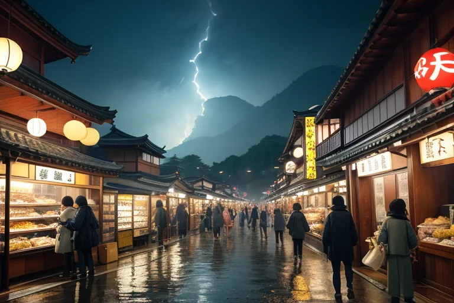
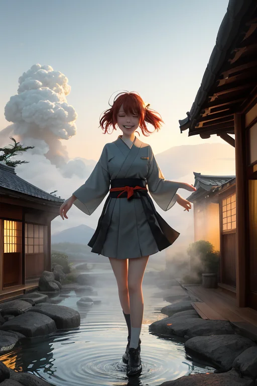
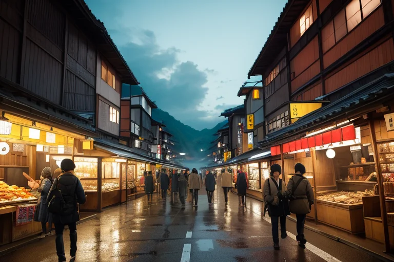
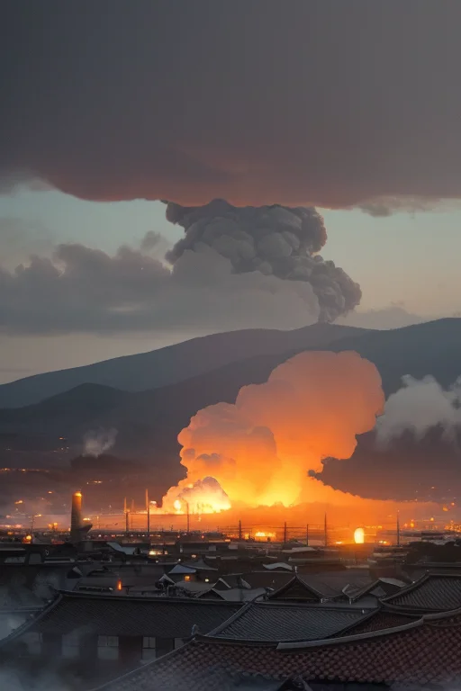

第一章 現実の群馬
あなたはまだ気づいていない。この土地にも、王がいることを。
草津温泉の湯畑は、白い湯煙を絶え間なく立ち上らせていた。硫黄の香りと、土産物屋の賑わい、浴衣姿の観光客の笑い声が混ざり合う。そのすぐ脇の路地裏では、水沢うどんの店先に行列ができ、店主が湯気の立つ麺を器用に掬い上げる。金の流れは、湯煙のように渦巻き、人を集め、動かす。伊香保温泉の石段を上る足音、富岡製糸場のレンガに触れる観光客の指先。すべてが「商い」という名の活気ある風に乗っている。
しかし、その風の底には、微かな歪みが潜む。観光客の増加が地元の水路に負荷をかけ、古い旅館の基礎が、絶え間ない湯煙と湿気で緩み始めている。誰も気に留めない、ごく小さな軋み。人を動かす欲望の風は、時に土地そのものを蝕む風にもなる。
湯煙の濃い一角で、からっ風が一陣、吹き抜けた。それは、ただの風ではなかった。

第二章 歪みの兆候
草津温泉の湯畑から立ち上る湯煙は、いつもより濃く、重かった。観光客はその熱気を珍しげに写真に収め、土産物屋の売り上げは好調だった。しかし、ヴェントラはその煙の流れに違和感を覚えていた。本来、からっ風でさっぱりと流れるはずの気流が、どこか淀んでいる。人の欲望と金の流れが、この土地の自然な呼吸を乱し始めていた。
「地熱圧、上昇中。水路の負荷、限界に近づいています」
オンセンナの声は、湯気の中から微かに聞こえた。彼女は古い旅館の床下を這う湿気をなぞり、基礎を浸す水の量を必死に調整していた。だが、観光客が増えれば増えるほど、湯は汲まれ、排水は増える。微調整が追いつかない。
グンマリア・ヴェントは榛名山の中腹に立ち、町を見下ろした。活気に満ちた風が、確かにここには吹いている。しかし、その風の底で、土地が微かに呻いている。彼は感情というものをまだ完全には理解していない。ただ、このままではいけない、という「衝動」が、彼を突き動かす風となった。

第三章 王の葛藤
草津温泉の湯畑から立ち上る湯煙は、いつもより濃く、重たかった。観光バスの列が絶えず、土産物屋の呼び込みの声が風に乗ってくる。ヴェントラが気流を整え、オンセンナが地熱の圧を必死に分散させても、人の熱気と欲望の密度は、妖精たちの調整を容易に上回った。
グンマリアは富岡製糸場の赤レンガの壁に手を触れた。かつてここに集った女工たちの想い、近代化という名の激しい風が、この土地をどう変えたか。彼は知っている。守るべきは、この土地そのものの均衡だ。しかし、人々の活気や経済の流れも、またこの地を形作る「風」である。止めるべきか、流すべきか。
彼の内側に、初めて明確な「逡巡」という感情が渦巻いた。それはからっ風のように鋭く、湯煙のように彼の判断を曇らせた。あなたを動かす風は何か？ 守護の使命か、それとも──この地で生きる人々の、切実な営みへの共鳴か。彼はまだ、その問いに答えられなかった。

第四章 妖精との対話
富岡製糸場の赤レンガに、夕陽が傾いていた。ヴェントラは、工場の屋根の上で風を切りながら言った。
「王よ、あなたは『流れ』を止めようとしている。でもね、ここで生まれた絹も、草津の湯も、伊香保の坂も、全部『流れ』そのものなんだ。人が集まり、金が動き、湯気が上がる。それがこの国の歪みを生むこともある。でも、同時に、この土地を生きている証でもある」
オンセンナが湯煙を揺らして続けた。「地熱の圧力は、時に歪みを大きくする。でも、その熱がなければ、湯も沸かず、人も集まらない。歪みを完全に消すことは、この土地の息吹を消すことと同じです」
王は黙って聞いた。彼らが言う「流れ」とは、富岡製糸場が近代化という風を呼び込んだことでもあり、水沢うどんの店先に立つ行列でもあり、だるま市の喧騒でもあった。守るべき均衡とは、静かなものだけではない。活気という名の、喧噪と欲望に満ちた風もまた、この地の一部だった。
「あなたを動かす風は、何ですか？」
妖精の問いが、からっ風のように彼の心を貫いた。
第五章 微調整と余韻
草津温泉の湯畑から立ち上る湯煙は、その日も濃かった。グンマリア・ヴェントは、その湯気の流れに身を委ねながら、目に見えない気流を手のひらで感じていた。彼の仕事は、ここで起きる小さな「ずれ」を整えることだ。
観光客の一人が、滑りやすい石畑で足を踏み外しそうになる。ほんの一瞬、風が彼の背中を押す。彼は体勢を立て直し、何事もなかったように歩き続ける。富岡製糸場を見学する家族連れ。子供が展示物に触れそうになった時、一陣のからっ風が彼の手をそらせる。それは叱責ではなく、偶然の調整だ。
榛名山をドライブするカップル。霧が深くなりかけた瞬間、風がそれをかき分け、視界をほんの少しだけ確保する。尾瀬の木道で、疲れたハイカーの足元に、そよ風がほこりを舞い上げ、一息つくきっかけを与える。
彼は災害を消せない。巨大な歪みを無に帰す力はない。ただ、流れの中で起きる小さな衝突を、ほんの少しだけ和らげる。湯煙のように形を変え、風のように見えず、誰にも気づかれず。
夕暮れ、焼きまんじゅうの匂いが漂う路地で、ヴェントラが尋ねた。「あなたを動かす風は、何ですか？」
王は、人々のざわめき、湯気の揺らぎ、金と欲望の流れを見つめた。そして、静かに答えた。「この土地が、そう動きたいからだ」
誰も気づかない微調整の日々は、また明日も続く。
あなたの町にも、王がいる。